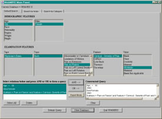
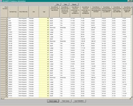

- system -
Full package, with source code More information More information is available at Housemarque's Housemarque audio web pages. . Housemarque Audio System Housemarque Audio System Expecting something else. Our music and audio system has been renamed to Housemarque Audio System due to trademark issues. The old web pages are off-line, pending a more thorough update.
|  |
|  |
Subscribe to DOI News to receive monthly announcements. Recent Press Coverage international magazines, newspapers and reports and the IDF's press releases. Key Resources The DOI Handbook - information on all aspects of the DOI and the DOI System (New Version 2. 0 released Apr 02) and Overview of the DOI System - summary of the DOI System and introduction to the Handbook. The Handle System - The underlying infrastructure for DOIs. |
|
This description is in keeping with the appropriate medical terminology. . The system determines information about the spatial relationship of objects in (two-dimensional) imagery and conveys it in the form of an English sentence. In the first task, the goal of landmark description is to find the "best" natural language path description for getting from a start landmark in an image to a goal location. The goodness of a description is quantified in terms of a measure of ambiguity of the spatial relationship of an object pair given its context, and given other considerations such as image resolution. |
|
. Feedback from a broad spectrum of the geological community was used. Alberta's geology is so diverse that one system cannot hope to be ideal for every case. Many more sites need to be evaluated to provide a truly adequate representation of each type of geological feature and to evaluate the sites' relative potential. Information about new sites and extra information about already evaluated sites might be obtained from a variety of sources. |
A site I really like: http://www.simplesystems.org/ImageMagick/Integration/